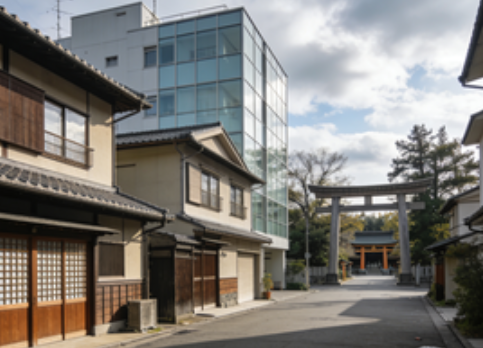
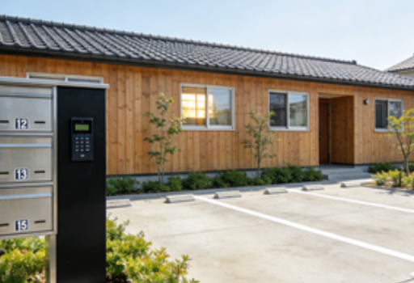

北区（Kita-ku）賃貸情報

北区は京都市北部に位置する静かな住宅地が中心のエリアで、賀茂御祖神社や上賀茂神社などの歴史スポットにも近い特徴がある。落ち着いた生活環境が魅力で、比較的リーズナブルな賃料が期待できる。
北大路駅周辺は商業施設が充実し、スーパーや薬局など生活必需品を扱う店舗が集まっている。紫野地区は住宅街が広がり、家族層や長期滞在者に人気のエリア。夜間は静かで、子育てに適した環境となっている。
北区の特徴
- 特徴：静かな住宅地が中心。歴史スポットに近い
- メリット：落ち着いた環境・比較的リーズナブルな賃料・生活施設充実
- デメリット：中心部からやや離れるため、通勤時間が長くなるケースがある
- 賃料例：1K約60,000円〜、1LDK約85,000円〜、2LDK約110,000円〜
推奨物件タイプ

北大路駅徒歩10分圏内の1DK物件：約75,000円。木造アパートで、南向きの部屋が多く採光が良好。駐車場付きの物件も一部存在する。
紫野地区の2LDK物件：約110,000円。低層マンションで、周囲が住宅地で静か。子供向けの公園が近隣にあり、家族層に人気。
上賀茂駅周辺の1K物件：約62,000円。学生向けの小規模物件が多く、賃料がリーズナブル。近隣にコンビニやカフェがあり生活しやすい。